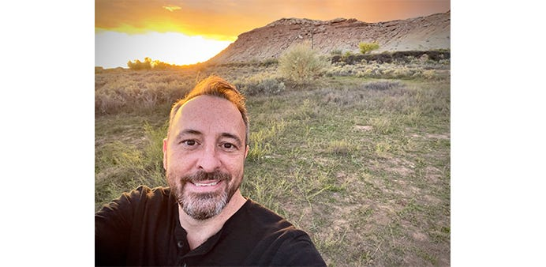

We spoke with Cameron Prince, Back End Engineer, about his passion for Drupal, his work as a tech lead for CMS.gov, and his past appearances on the History Channel!

Can you tell us about your journey as a Back End Drupal developer? How did you get started, and what led you to specialize in Drupal?
I was exposed to Drupal in a “trial by fire” sort of way when I was hired to take over a so-called “90%” complete Drupal 6 site from an off-shore development company. It was one of the most frustrating years of my life, but I saw an elegance in Drupal and once I went to my first DrupalCon, some 10+ years ago now, I fell in love with the Drupal community and knew I was at home.
What excites you most about working with Drupal?
That I’m part of something bigger! That my work is important because it helps others and in return, I get to use the great work of others to learn from and help the clients I work for.
Drupal is known for its vibrant community. How have you engaged with the Drupal community, and how has it helped you in your professional growth?
I’ve attended DrupalCons and Drupal Camps for years and contributed to numerous Drupal projects. I’ve made a lot of friends through Drupal and my involvement with the community has opened many doors for me in my career.
What is a Drupal contribution that you are particularly proud of?
The Beta Site module is probably one of my most significant contributions to the Drupal community. This module allows Drupal to operate as if it were two different sites with the same content, but with completely different URLs. It was developed to facilitate an information architecture overhaul of CMS.gov. The Beta Site module allows the hundreds of CMS.gov editors to review their content in the new structure on the production site before the changes are made public. Managing so many IA changes to such a large site as CMS.gov and seeing it work well is a joy to behold.
What project do you work on at CivicActions and what do you enjoy about it?
As the tech lead for the CMS.gov project, one of my responsibilities is to oversee the site’s codebase. I have the pleasure of being able to learn from others by reviewing their work and can also pass on knowledge I have to them in the process, which I really enjoy.
What is the most rewarding part of your job?
I love to see my coworkers excited about their work on the CMS.gov project. I believe that I speak for the team in saying that one of our biggest rewards for our work is knowing that what we do is helping so many people find the information they need, efficiently and quickly.
How would you describe CivicActions’ company culture?
The thing that comes to mind most regarding CivicActions’ culture is that we’re a group of people of all types and varieties that love technology as much as we love making a difference. We aren’t content with just getting by, but truly strive for excellence in everything we do. Failure is hardly a thought. When we commit, whatever it is gets done and done well.
On a lighter note, what are some fun facts that people may not know about you?
I’ve studied Nikola Tesla since my childhood and have recreated more of his inventions than I can count. One of which is the Tesla gun, which was featured on Smarter Every Day and Discovery Channel’s Inventor’s Week. This experience has taken me on many adventures which continue to this day. You can find me on recent episodes of History Channel’s The Secret of Skinwalker Ranch and the Beyond Skinwalker Ranch spin-off series. I’m the guy who brings the lightning!